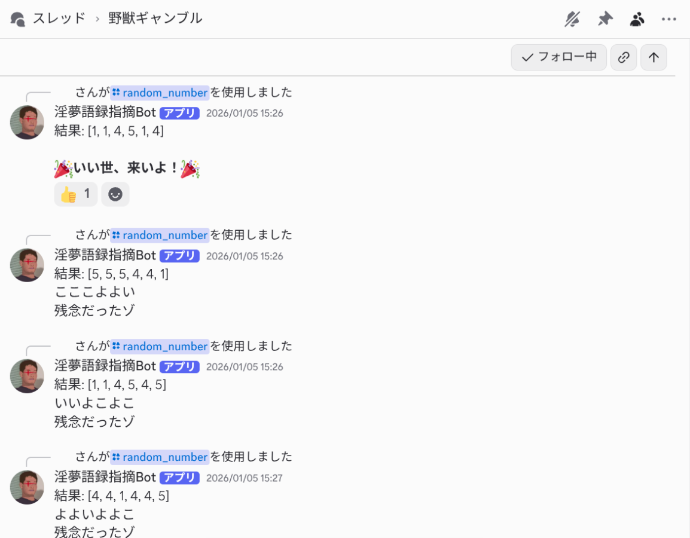
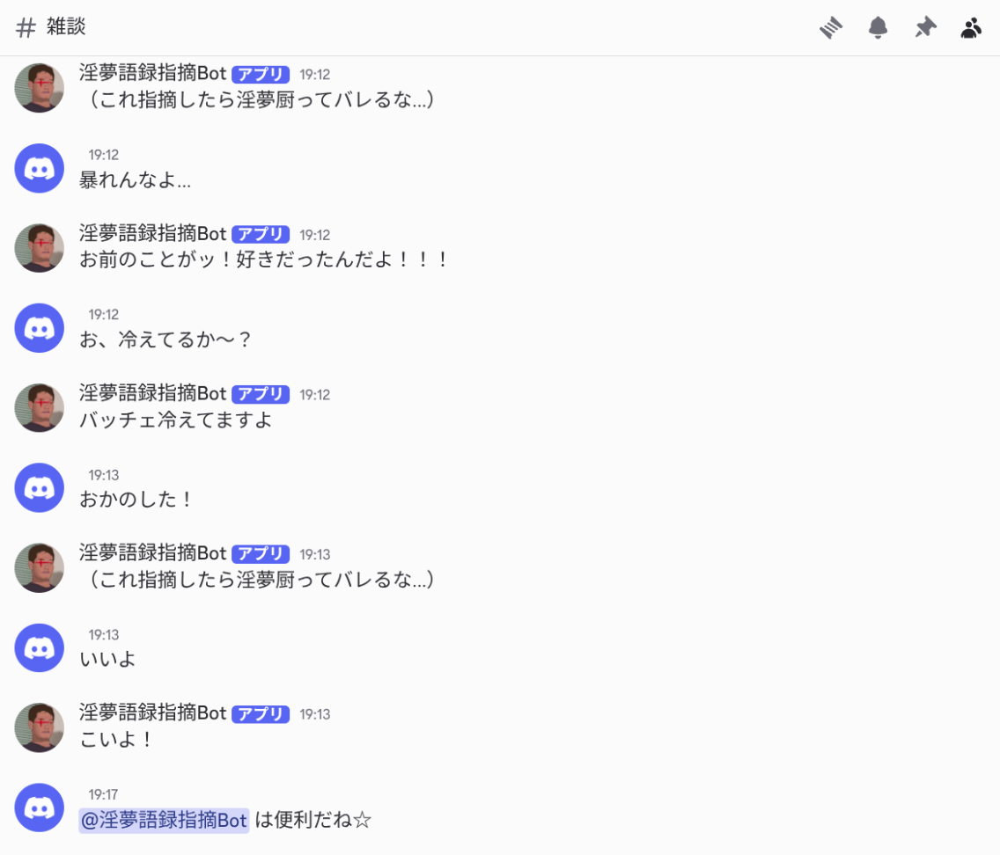

淫夢語録指摘Bot #7323
淫夢語録を検出して指摘する Discord Bot。
サーバーの治安維持に役立つ、ユニークで便利な機能を搭載。


淫夢語録を検出して指摘する Discord Bot。
サーバーの治安維持に役立つ、ユニークで便利な機能を搭載。


淫夢語録を発した場合、自動で指摘してくれます。
（淫夢とは…ここでは、通称「野獣先輩」が出演するビデオの総称とする。）
1, 3, 4, 5, 6, 9の中からランダムに6回選びます。
ちょっとした運試しにどうぞ。
Botが参加しているサーバーの一覧を表示します。
管理や確認に便利です。